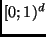

Next: Applications Up: XXL - A Library Previous: Available Functionality
Spatial
The package xxl.spatial provides support and building blocks for spatial,
temporal and high-dimensional join processing. The classes belong to three main
categories: data types, building blocks and algorithms. The most important data
types are -dimensional points and rectangles. For these, we provide lp-metrics
and operations like overlap, perimeter, area, etc. This package
also contains useful building blocks like z-code computation, data-conversion
tools and a fixed-point double-arithmetic. The fixed-point arithmetic considerably
facilitates the implementation of algorithms that deal with data that is normalized
to the unit-cube , e.g. computing a z-code for a given point is performed with
a simple `bit-zipper'. Currently, several -dimensional join-algorithms come ready-to-use. We provide implementations
of plane sweep [APR$^+$98], the z-code join [Ore91], S3J and MSJ [KS00] and hash-based algorithms [PD96]. In addition, this package contains
new developments like the join techniques proposed in [DS00] and a new, powerful similarity-join
algorithm [DS01]. The implementations of all the above
algorithms are very compact and flexible, e.g. the -dimensional z-code join [Ore91] is implemented with only lines of code. The high-level coding of the algorithms makes the
integration of new functionality easy. Our experience has shown that implementing
a new algorithm is reduced to implementing its delta to an existing approach.
This does not only sharply reduce the coding time but also helps to classify new
approaches.
Next: Applications Up: XXL - A Library Previous: Available Functionality
Bernhard Seeger
2001-10-11